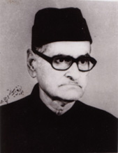
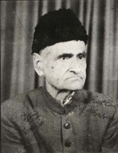
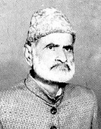

|
ABUL
FAZL SIDDIQI was born in Badayun, India, in 1908. A versatile and
prolific writer, he drew his characters from the rural and feudal environment
of India and portrayed them with engaging realism. His published works
include ten collections of short stories, four novels, four novellas,
a book of biographical sketches, a book on gardening, and a translation
of George Orwell’s novel 1984. His short story “Charhtaa Suraj”
was the recipient of a UNESCO International Award in 1957. He died in
Karachi in 1986.
|
|  | ||
|

|
 |